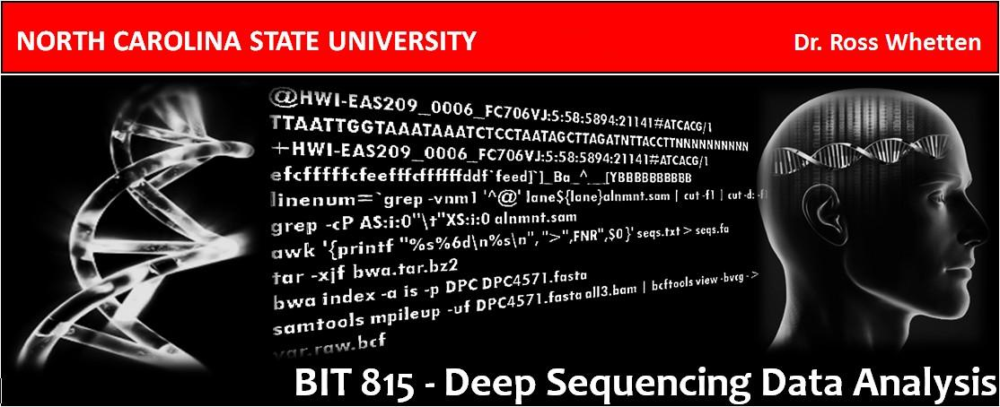

Semester Overview, 2019¶
Image credit: Lilian Matallana
Class meetings are in Room 6117 Jordan Hall from 8:30 to 10:20 am on Mondays, Wednesdays, and Fridays.
The Biostar Handbook is a resource for much of the reading.
The Piazza online forum page is available for questions and discussion.
Teaching assistant: Will Kohlway
Course Schedule¶
Week Dates Topics Biostar Handbook Section 1 7–11 Jan Introduction to Linux and the command-line interface 1, 2, 4 2 14–18 Jan Sequencing instruments, Experimental design, Data preprocessing and quality control 8, 9, 10 21 Jan Martin Luther King holiday, no class 3 22-25 Jan Error correction and alignment 4 28 Jan -1 Feb Assembly - transcriptomes and genomes 22 5 4-8 Feb Re-sequencing, alignment, structural variation 17, 18, 23 6 11-15 Feb Discovery and genotyping of genetic variation 7 18-22 Feb R and R Studio - lectures and exercises through Software Carpentry website, sections 1 - 8 8 25 Feb-1 Mar R and R Studio, continued - sections 9 - 12. Advanced: Data Carpentry for Genomics 9 4-8 Mar Transcriptome analysis: differential gene expression, annotation 19, 20 11-15 Mar Spring break - no classes 10 18-22 Mar Genome analysis: ChIP-seq, DHS-seq, 3-D conformation 11 25-29 Mar Linux command-line tools: awk, sed, and bash 15 12 1-5 Apr CLC Genomics Workbench - data QC and pre-processing 13 8-12 Apr CLC Genomics Workbench - RNA-seq analysis 14 15-18 Apr CLC Genomics Workbench - genome assembly tutorial 19 Apr Spring Holiday 15 22-26 Apr CLC Genomics Workbench - variant analysis
General background information and course resources¶
General advice on troubleshooting
Class bash history files from instructor VCL instances
Lior Pachter’s list of sequencing-based assays: *Seq
The R statistical programming environment
Course resources
Cloud computing with Amazon Web Services: setting up an AWS account and starting an instance
OMICtools software database publication and website
Qiagen webpage of tutorials for CLC workbench programs
Colib’read project webpage on reference-assembly-free programs for SNP and indel detection and moress
A flow-chart overview of DNA sequencing experiments¶

Last modified 18 December 2018. Edits by Ross Whetten, Will Kohlway, & Maria Adonay.